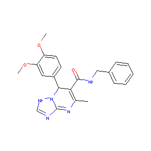
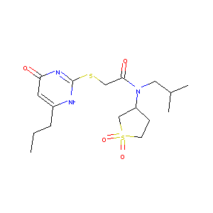
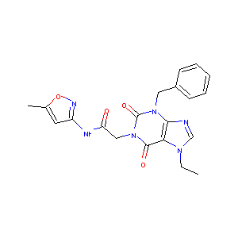
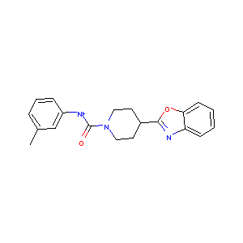
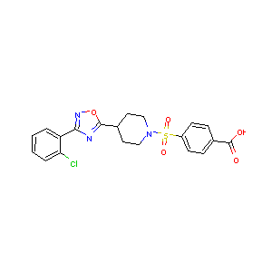
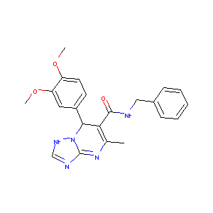
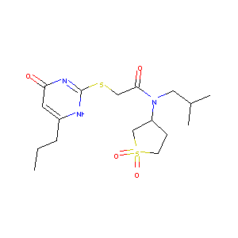
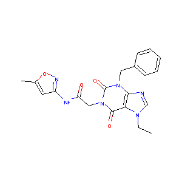
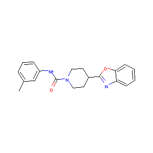
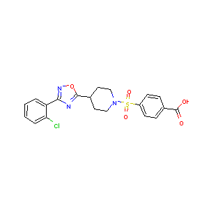

This notebook walks through the creation of multitask models on MUV. The goal is to demonstrate that multitask methods outperform singletask methods on MUV.
%reload_ext autoreload
%autoreload 2
%pdb off
reload = True
Automatic pdb calling has been turned OFF
import os
import deepchem as dc
current_dir = os.path.dirname(os.path.realpath("__file__"))
dataset_file = "medium_muv.csv.gz"
full_dataset_file = "muv.csv.gz"
# We use a small version of MUV to make online rendering of notebooks easy. Replace with full_dataset_file
# In order to run the full version of this notebook
dc.utils.download_url("https://s3-us-west-1.amazonaws.com/deepchem.io/datasets/%s" % dataset_file,
current_dir)
dataset = dc.utils.save.load_from_disk(dataset_file)
print("Columns of dataset: %s" % str(dataset.columns.values))
print("Number of examples in dataset: %s" % str(dataset.shape[0]))
Columns of dataset: ['MUV-466' 'MUV-548' 'MUV-600' 'MUV-644' 'MUV-652' 'MUV-689' 'MUV-692'
'MUV-712' 'MUV-713' 'MUV-733' 'MUV-737' 'MUV-810' 'MUV-832' 'MUV-846'
'MUV-852' 'MUV-858' 'MUV-859' 'mol_id' 'smiles']
Number of examples in dataset: 10000
Now, let’s visualize some compounds from our dataset
from rdkit import Chem
from rdkit.Chem import Draw
from itertools import islice
from IPython.display import Image, display, HTML
def display_images(filenames):
"""Helper to pretty-print images."""
for filename in filenames:
display(Image(filename))
def mols_to_pngs(mols, basename="test"):
"""Helper to write RDKit mols to png files."""
filenames = []
for i, mol in enumerate(mols):
filename = "MUV_%s%d.png" % (basename, i)
Draw.MolToFile(mol, filename)
filenames.append(filename)
return filenames
num_to_display = 12
molecules = []
for _, data in islice(dataset.iterrows(), num_to_display):
molecules.append(Chem.MolFromSmiles(data["smiles"]))
display_images(mols_to_pngs(molecules))
 









MUV_tasks = ['MUV-692', 'MUV-689', 'MUV-846', 'MUV-859', 'MUV-644',
'MUV-548', 'MUV-852', 'MUV-600', 'MUV-810', 'MUV-712',
'MUV-737', 'MUV-858', 'MUV-713', 'MUV-733', 'MUV-652',
'MUV-466', 'MUV-832']
featurizer = dc.feat.CircularFingerprint(size=1024)
loader = dc.data.CSVLoader(
tasks=MUV_tasks, smiles_field="smiles",
featurizer=featurizer)
dataset = loader.featurize(dataset_file)
Loading raw samples now.
shard_size: 8192
About to start loading CSV from medium_muv.csv.gz
Loading shard 1 of size 8192.
Featurizing sample 0
Featurizing sample 1000
Featurizing sample 2000
Featurizing sample 3000
Featurizing sample 4000
Featurizing sample 5000
Featurizing sample 6000
Featurizing sample 7000
Featurizing sample 8000
TIMING: featurizing shard 0 took 13.113 s
Loading shard 2 of size 8192.
Featurizing sample 0
Featurizing sample 1000
TIMING: featurizing shard 1 took 2.824 s
TIMING: dataset construction took 16.709 s
Loading dataset from disk.
splitter = dc.splits.RandomSplitter(dataset_file)
train_dataset, valid_dataset, test_dataset = splitter.train_valid_test_split(
dataset)
#NOTE THE RENAMING:
valid_dataset, test_dataset = test_dataset, valid_dataset
Computing train/valid/test indices
TIMING: dataset construction took 1.015 s
Loading dataset from disk.
TIMING: dataset construction took 0.504 s
Loading dataset from disk.
TIMING: dataset construction took 0.507 s
Loading dataset from disk.
import numpy as np
import numpy.random
params_dict = {"activation": ["relu"],
"momentum": [.9],
"batch_size": [50],
"init": ["glorot_uniform"],
"data_shape": [train_dataset.get_data_shape()],
"learning_rate": [1e-3],
"decay": [1e-6],
"nb_epoch": [1],
"nesterov": [False],
"dropouts": [(.5,)],
"nb_layers": [1],
"batchnorm": [False],
"layer_sizes": [(1000,)],
"weight_init_stddevs": [(.1,)],
"bias_init_consts": [(1.,)],
"penalty": [0.],
}
n_features = train_dataset.get_data_shape()[0]
def model_builder(model_params, model_dir):
model = dc.models.MultiTaskClassifier(
len(MUV_tasks), n_features, **model_params)
return model
metric = dc.metrics.Metric(dc.metrics.roc_auc_score, np.mean)
optimizer = dc.hyper.HyperparamOpt(model_builder)
best_dnn, best_hyperparams, all_results = optimizer.hyperparam_search(
params_dict, train_dataset, valid_dataset, [], metric)
Fitting model 1/1
hyperparameters: {'learning_rate': 0.001, 'layer_sizes': (1000,), 'data_shape': (1024,), 'dropouts': (0.5,), 'activation': 'relu', 'decay': 1e-06, 'batch_size': 50, 'penalty': 0.0, 'nesterov': False, 'init': 'glorot_uniform', 'bias_init_consts': (1.0,), 'weight_init_stddevs': (0.1,), 'batchnorm': False, 'nb_layers': 1, 'nb_epoch': 1, 'momentum': 0.9}
Ending global_step 160: Average loss 5.42957
TIMING: model fitting took 2.286 s
/home/leswing/Documents/deepchem/deepchem/metrics/__init__.py:297: UserWarning: Error calculating metric mean-roc_auc_score: Only one class present in y_true. ROC AUC score is not defined in that case.
warnings.warn("Error calculating metric %s: %s" % (self.name, e))
computed_metrics: [0.59027777777777779, nan, nan, 0.40112994350282483, nan, 0.76086956521739135, 0.54878048780487809, 0.43636363636363634, 0.54861111111111116, nan, 0.64534883720930236, nan, nan, nan, 0.53963414634146334, 0.60714285714285721, nan]
Model 1/1, Metric mean-roc_auc_score, Validation set 0: 0.564240
best_validation_score so far: 0.564240
computed_metrics: [0.99852941176470589, nan, 0.83373269435569752, 0.95655976676384846, 0.99275631500742945, 0.99057610241820759, 0.99691358024691357, 0.99583945178658828, 0.95561738208797031, 0.84984025559105425, 1.0, 0.86826568265682669, 0.78811659192825112, 0.93687834736036724, nan, nan, 1.0]
Best hyperparameters: (1e-06, (1024,), 1, 'relu', (1000,), 50, 0.0, False, 'glorot_uniform', (1.0,), (0.1,), 1, False, (0.5,), 0.001, 0.9)
train_score: 0.940259
validation_score: 0.564240